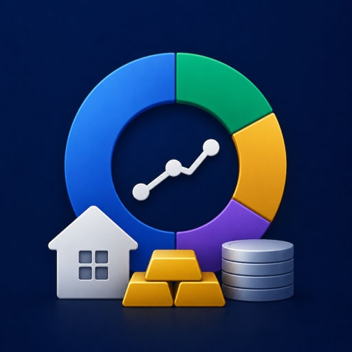

We're here to help you get the most out of Holdings.
Open Holdings and tap the plus button. Pick a category (cash, equity, ETF, real estate, etc.). For tradable assets, search a ticker — Holdings pulls the live price from Yahoo Finance. For cash and debts, enter the value and currency yourself.
Yahoo Finance — for stocks, ETFs, bonds, crypto, and FX rates. Prices refresh when you open the app or pull to refresh on the asset list.
If you are signed in to iCloud on all your devices and have iCloud Drive enabled, Holdings will sync your data through your private iCloud CloudKit container. Changes typically propagate within a few seconds. We never see your data — it travels directly between your devices through Apple's infrastructure.
Holdings totals everything in your display currency, which is set in Settings. Change it to EUR (or any other supported currency) and totals will reconvert at live FX rates. Each individual asset still keeps its native currency in the detail view.
For Italian properties, Holdings uses the official OMI dataset from the Agenzia delle Entrate (zone and property-type lookups), adjusted forward with the national house-price index. For US, Germany, and Spain it projects your purchase price using bundled annual HPI series. UK and France valuations are coming in a future update.
Yes. When you add a real-estate asset, you can attach an existing debt as its mortgage. Holdings will show them paired in your net-worth view and compute equity automatically.
Geography breakdown (your wealth distributed by country), real-estate valuations, net-worth goals, and PDF export. Pro is a one-time $19.99 purchase, no subscription. Family Sharing is supported, so one purchase covers your household.
Open the paywall and tap "Restore purchases". As long as you're signed in to the same Apple ID that bought Pro, it will reactivate immediately. Family Sharing members can restore the same way.
Settings > Biometric lock. Once enabled, Holdings will require Face ID or Touch ID every time you open the app or bring it back from the background.
macOS 15.6 or later, or iOS / iPadOS 18.6 or later. iCloud sync is optional but recommended.
Remove Holdings from each device, then go to iOS Settings > [your name] > iCloud > Manage Storage > Holdings and delete the CloudKit data. This removes everything permanently.